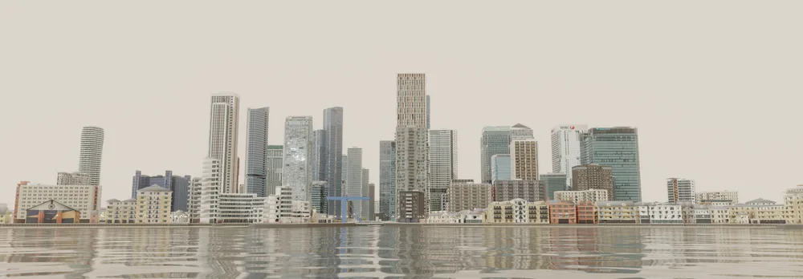
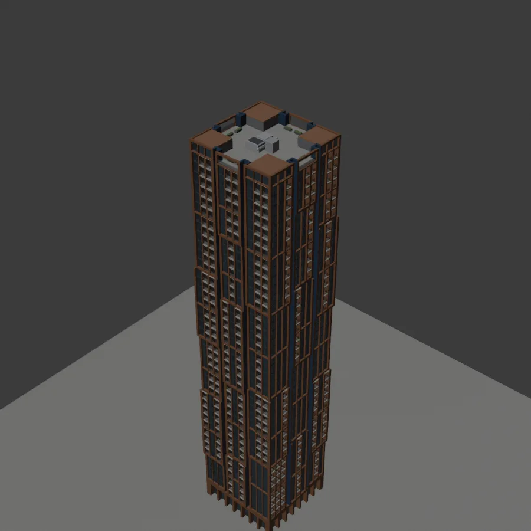
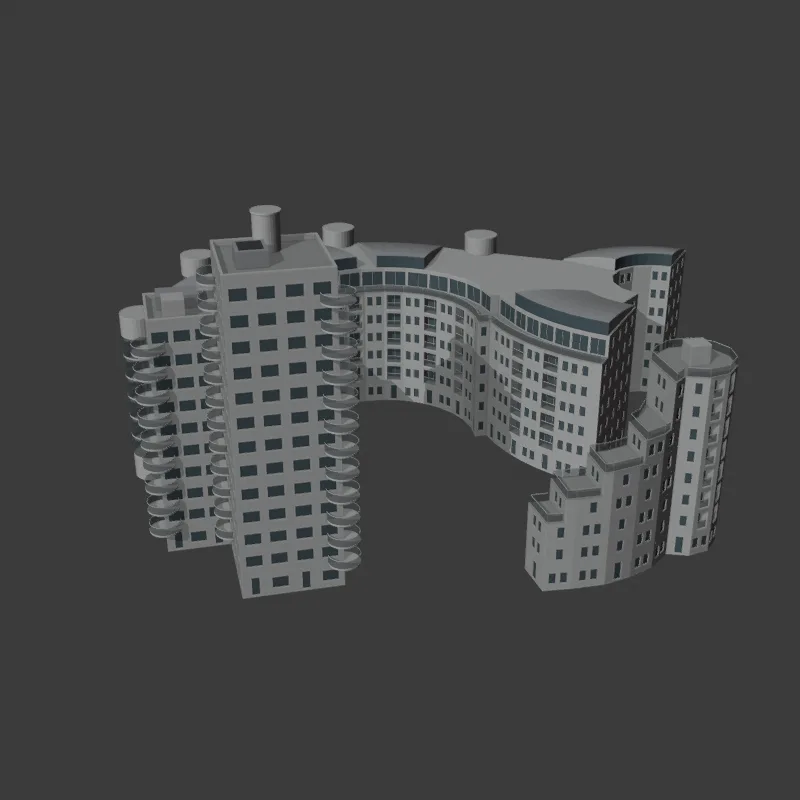
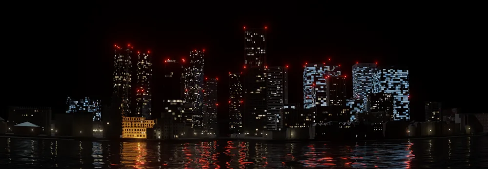
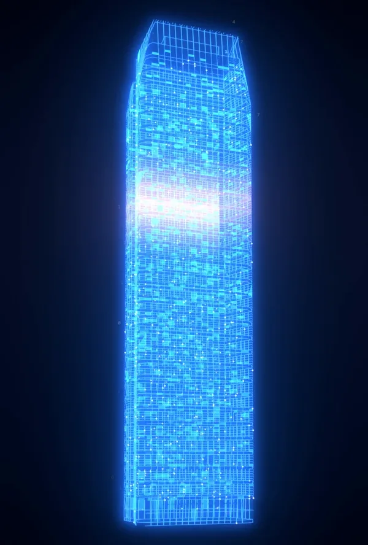
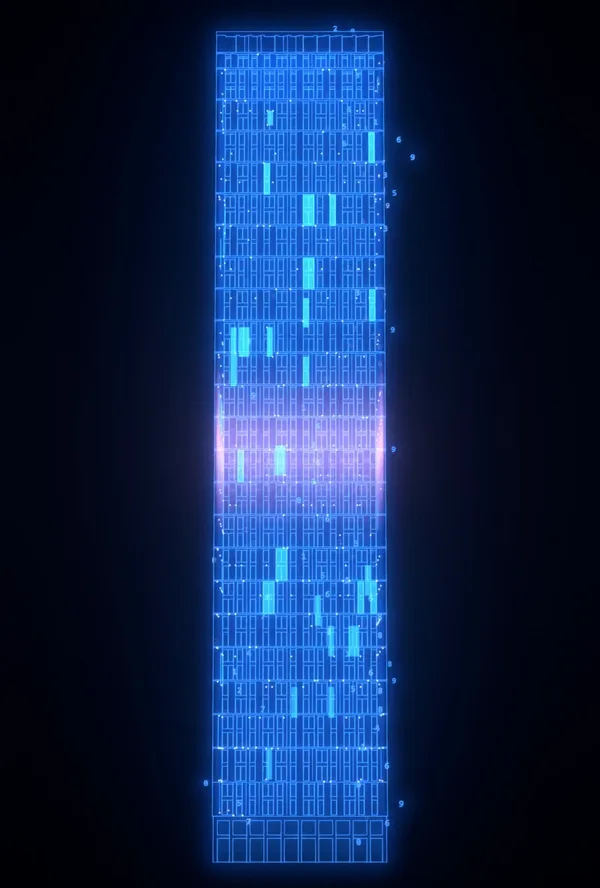

3D environment
Canary Wharf — Digital City Model
A digital replica of the Canary Wharf skyline in London. I modelled 40 of its buildings one by one from reference photos and map data, then put them together so the model lines up with a real photo taken from across the Thames.

Building by building
Each tower started from photos and its real footprint, then got its own floor heights, facade rhythm, balconies and roofline. The towers have the most detail and the low-rise streets less, so the model holds up wherever the camera goes. The shapes are kept clean, with no overlapping geometry, so every building reads well in close-up and on a big screen.


After dark
The same scene by night, with lit windows that vary floor by floor and building by building, red aviation lights on the tower tops, and reflections running across the river.

Holographic turntables
Because the models are built cleanly, a single building can be pulled out of the scene and given a new look. These looping turntables render the towers as glowing holograms for vertical screens.

